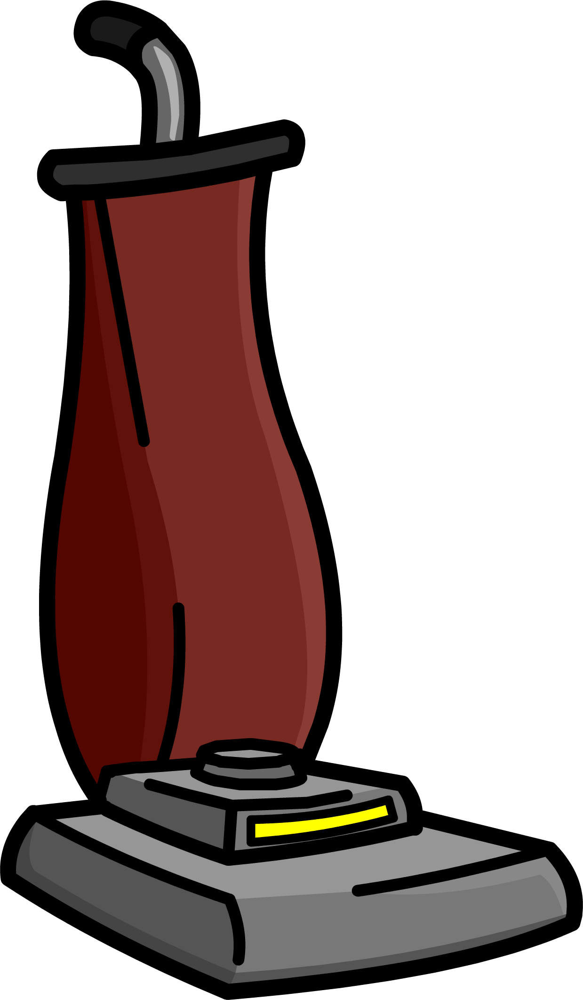
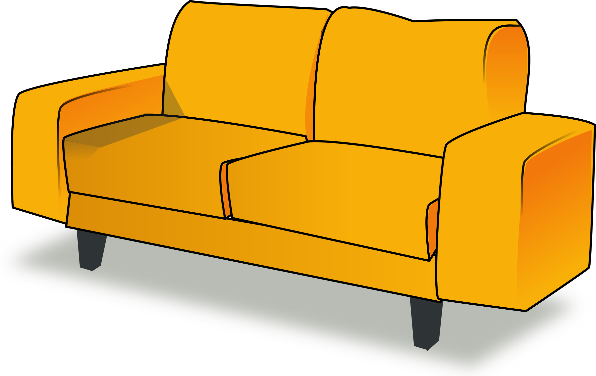

<!DOCTYPE html>
<html>
<head>
    <title>Lexical Interference & Semantic Constraint</title>
    <script src="https://unpkg.com/jspsych@8.2.0"></script>
    <script src="https://unpkg.com/@jspsych/plugin-vsl-grid-scene"></script>
    <script src="https://unpkg.com/@jspsych/plugin-html-keyboard-response"></script>
    <script src="https://unpkg.com/@jspsych/plugin-audio-keyboard-response"></script>
    <script src="https://cdn.jsdelivr.net/gh/jspsych/jspsych@jspsych@7.0.0/examples/js/webgazer/webgazer.js"></script>
    <script src="https://unpkg.com/@jspsych/extension-webgazer@1.2.0"></script>
    <script src="https://unpkg.com/@jspsych/plugin-preload"></script>
    <link href="https://unpkg.com/jspsych@8.2.0/css/jspsych.css" rel="stylesheet" type="text/css" />
</head>
<body></body>
<script>
    var jsPsych = initJsPsych({
        override_safe_mode: true,
        on_finish: function() {
            jsPsych.data.displayData();
        },
        extensions: [
            {type: jsPsychExtensionWebgazer, params: {auto_initialize: true}},
        ]
    });

    var timeline = [];

    var preload = {
        type: jsPsychPreload,
        images: ['img/fork.png', 'img/vacuum.PNG', 'img/couch.png','img/plant.png'],
        audio: ['audio/ringtone.mp3']
    };

    var welcome = {
        type: jsPsychHtmlKeyboardResponse,
        stimulus: "Welcome to the experiment. Press any key to begin."
    };

    var test = {
        type: jsPsychAudioKeyboardResponse,
        stimulus: 'audio/ringtone.mp3',
        prompt: `
            <table>
                <tr>
                    <td id="top-left"></img></td>
                    <td id="top-right"></img></td>
                </tr>
                <tr>
                    <td id="low-left"></img></td>
                    <td id="low-right"></img></td>
                </tr>
            </table>`,
        trial_duration: 2000,
        extensions: [
            {type: jsPsychExtensionWebgazer, params: {targets: ['#top-right', '#top-left', '#low-left', '#low-right']}}
        ]
    };

    timeline.push(preload, welcome, test);

    jsPsych.run(timeline)

</script>
</html>
